After the Istanbul layover chaos (and Neet’s infamous olive heist), the trio finally landed in the U.S., exhausted but victorious. However, the final and most unpredictable hurdle awaited them—immigration.
Buddy wanted to get home, lie down, and remain in the same country for the entire nap. He had been sleeping in installments. None of them had felt like the whole purchase.
Heather gathered her passport and looked down at the dogs.
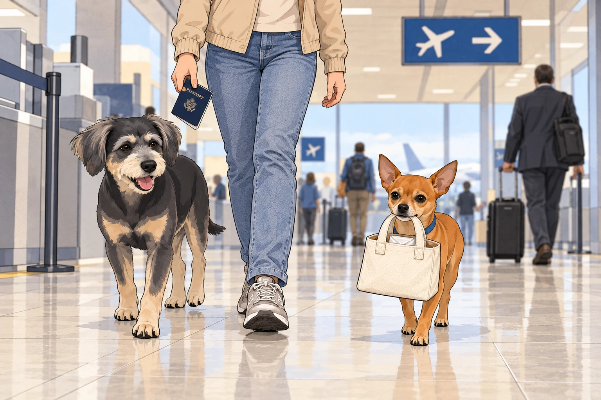
“Nearly there, boys.”
Buddy moved close to her ankle. Neet immediately copied him, then edged half a paw ahead. Even behaving had become a competition.
As they walked toward the Customs and Border Protection checkpoint, Neet whispered, “Alright, stay cool. Act natural.”
Buddy groaned. “That’s literally the worst advice for you.”
Neet glanced down at his little bag, then straightened so abruptly that Buddy stopped too.
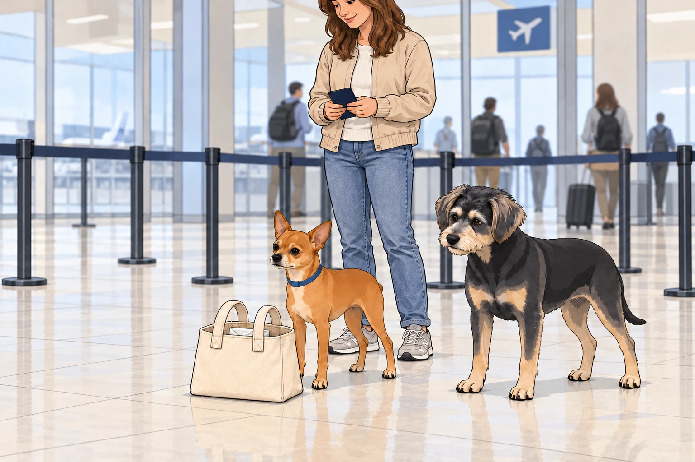
“What?”
“Nothing. Natural standing.”
“Then do some natural walking. We’re next.”
Heather took a deep breath as she approached the immigration officer, a tall, expressionless man who looked like he hadn’t smiled in years.
“Purpose of travel?” he asked, glancing at Heather’s passport.
“Returning home from vacation,” Heather replied cheerfully.
The officer nodded, looking down at the two dogs at her feet. “And these are...?”
“My emotional support animals,” Heather said quickly.
Neet grinned. “Yes. I emotionally support chaos.”
Buddy covered his face with a paw. “We’re gonna get deported.”
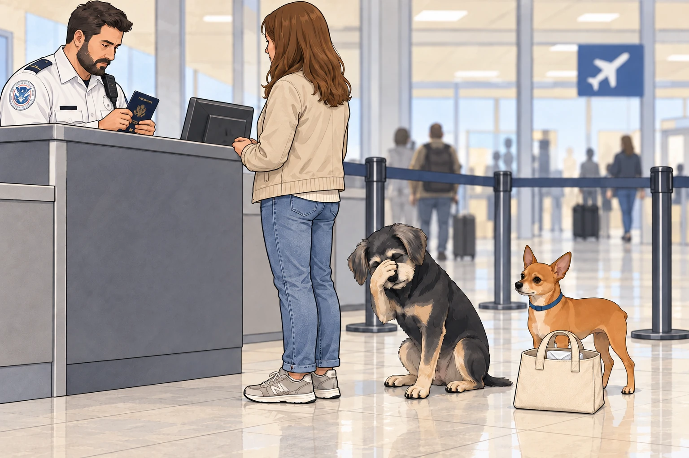
The officer squinted. “Any food or agricultural products you’re bringing in?”
Neet froze.
Heather paled.
Neet pressed his little bag behind his forelegs. Buddy looked straight ahead with the fierce concentration of a dog who had never met an olive.
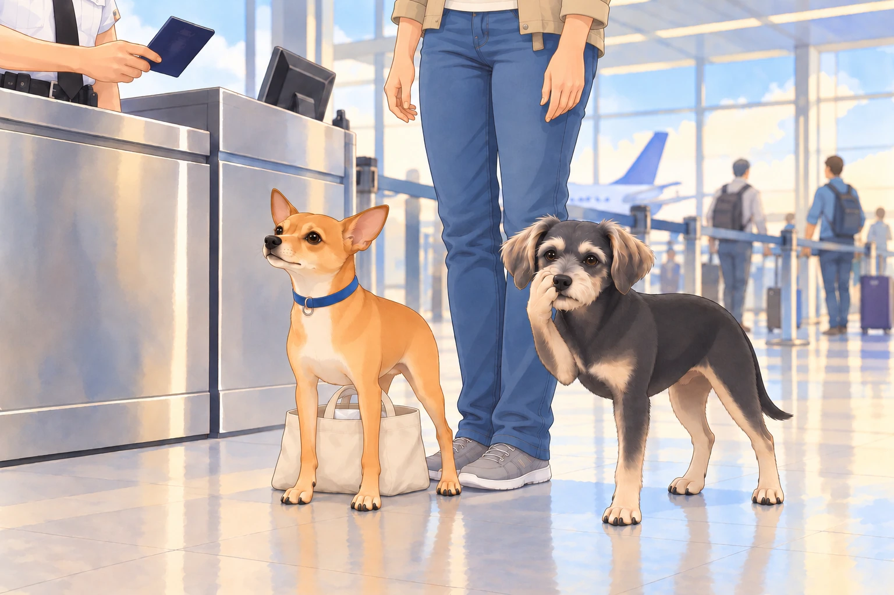
Buddy whispered, “The olives.”
Neet cleared his throat. “Define food.”
Heather put a hand on Neet’s collar. “No! No food!”
The officer stared at them for an uncomfortably long time before finally stamping Heather’s passport. “Welcome back.”
Heather thanked him and guided Neet away before he could offer any more definitions. Buddy followed, carefully lowering the paw that had been hiding his face. He could walk or despair, but doing both on three legs was unnecessarily difficult.
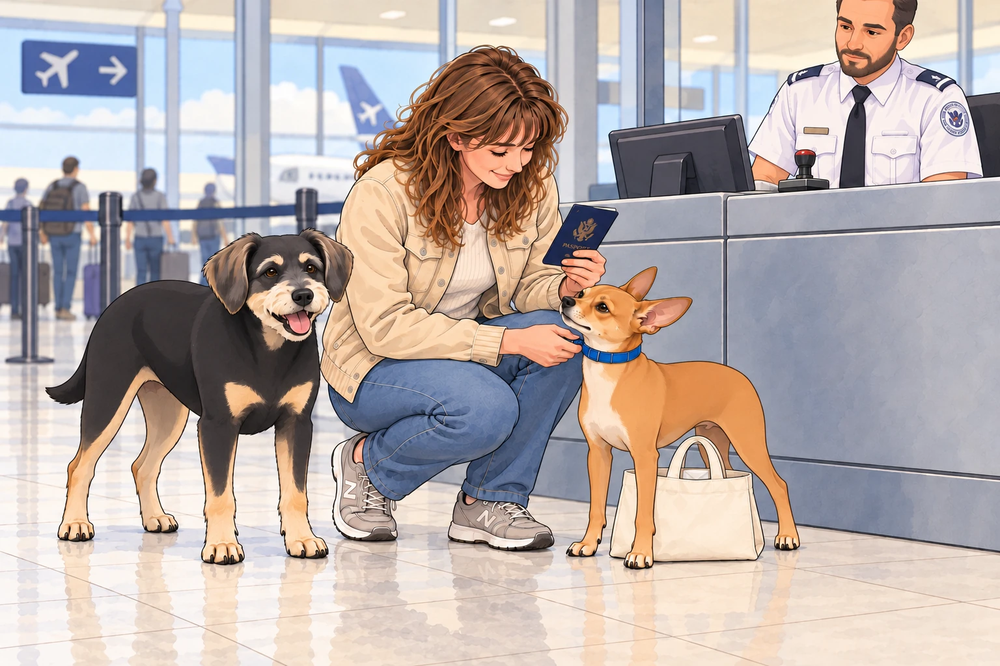
As they hurried past, Neet whispered, “See? Cool and natural.”
Buddy sighed. “You barely survived.”
Heather stopped beyond the checkpoint, put her passport away, and released Neet’s collar.
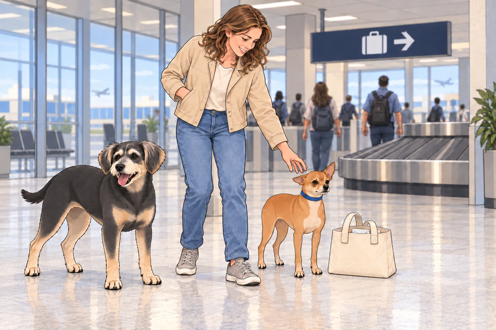
“Now our bags. Then home.”
Buddy could almost feel the rug beneath him.
Neet looked back toward the officer.
“He liked us.”
“He liked us leaving,” Buddy said, and followed Heather.
The Baggage Claim Conundrum
At baggage claim, the same red suitcase went past three times. Buddy was beginning to feel he should greet it.
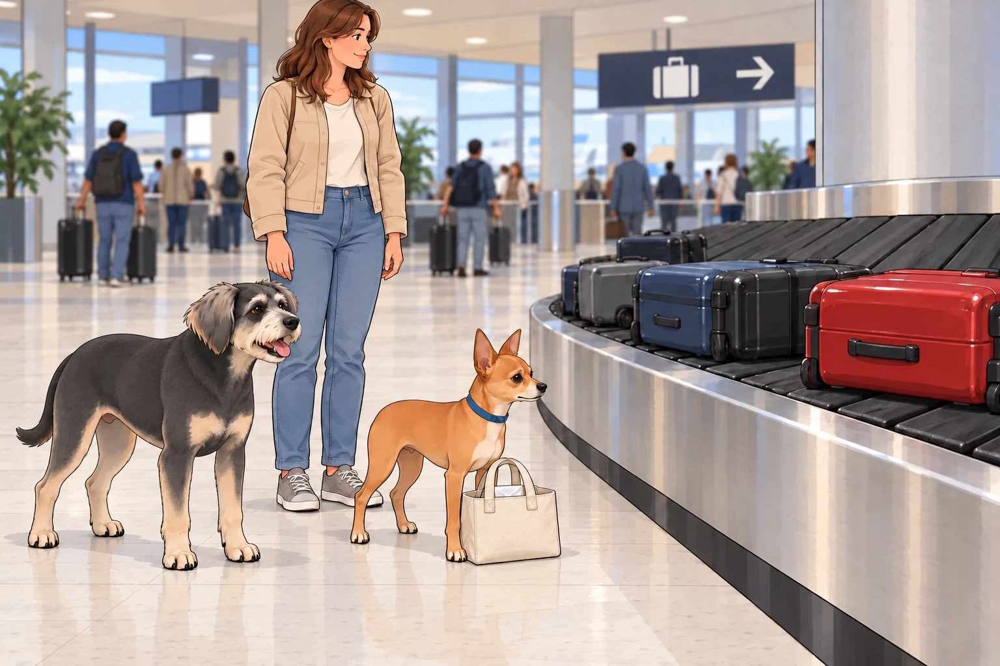
He watched for Heather’s bags. Retrieve them, find the door, go home. Three steps. None required international negotiation.
The belt rattled. A heavy case bumped another case, which bumped a third. People leaned forward, then relaxed as someone else’s belongings passed.
Buddy spotted a suitcase that looked like Heather’s. At last. He hurried along the stationary edge beside it, trying to show her which one to take.
“Here. This one.”
She followed his excited bark. A traveler stepped away from the edge, leaving a clear space. Heather reached for the handle as the suitcase came around the curve, checked its tag, and let it continue.
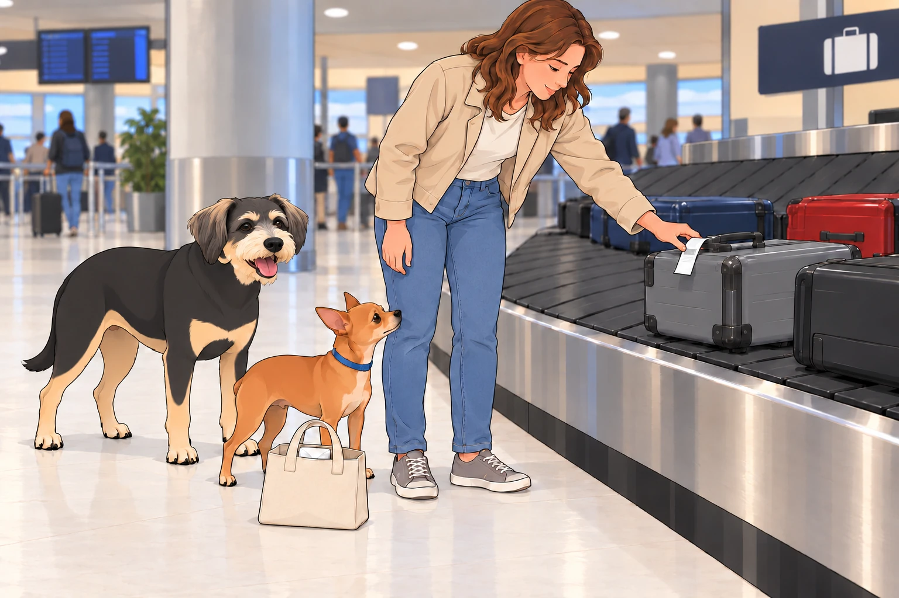
“Oh. Almost, Buddy. That’s someone else’s.”
Buddy stared at it. From the other side, the bag didn’t look nearly as familiar. He had been so pleased to see it that he had stopped looking.
A woman farther along reached for the same suitcase. Heather smiled at her.
“Your bag had a very enthusiastic welcome.”
The woman laughed. “Better than mine.”
She lifted it off, and Buddy stepped back beside Heather. He could have accepted this as a small mistake and resumed waiting. Instead, he decided he must personally prevent every remaining delay.
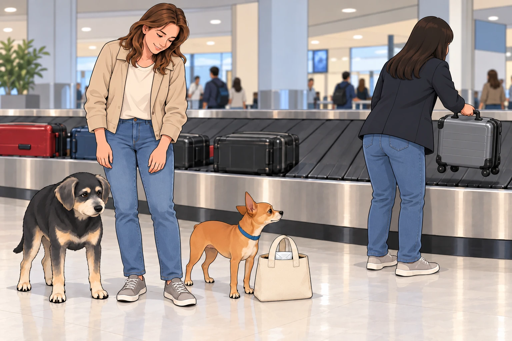
“I’ll check the next one properly,” he told Neet.
Neet had watched the belt, the reaching hands, and Buddy’s unsuccessful chase with increasing interest.
“You’re on the wrong side.”
“Of what?”
“The moving part.”
“That’s where the luggage goes.”
“Exactly.”
Heather scanned the carousel. “Okay, our bags should be—”
Before she could finish, a blur of tan fur bolted past her.
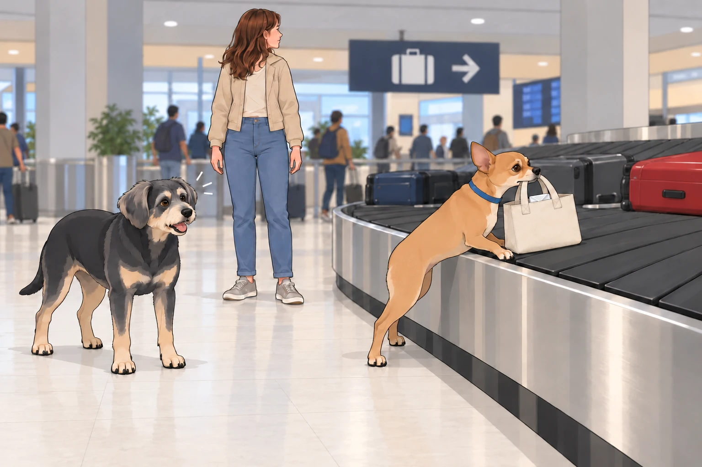
Neet had climbed onto the baggage belt.
“NEET!” Heather shrieked as horrified travelers gasped.
“I’M PART OF THE LUGGAGE NOW!” Neet howled, spinning in circles as the conveyor belt carried him forward.
Then he planted his paws and lifted his chin. The red suitcase passed beside him. Finally, a traveler with the correct attitude.
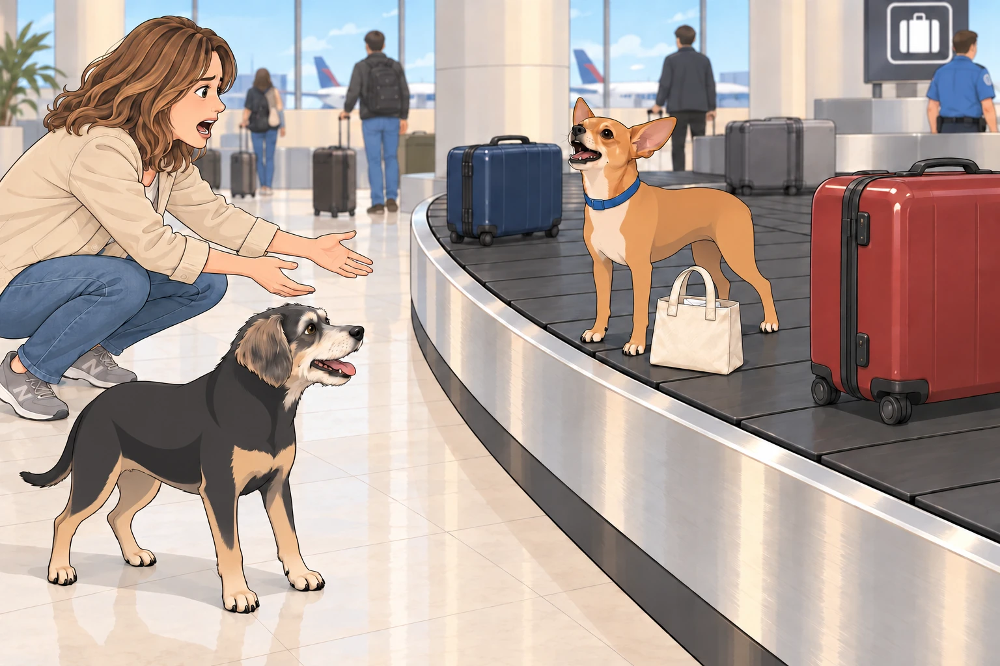
Buddy started after him along the stationary edge. A bulky suitcase blocked Heather’s view of Neet for a moment, and she hurried past it. Buddy nearly followed her, then stopped.
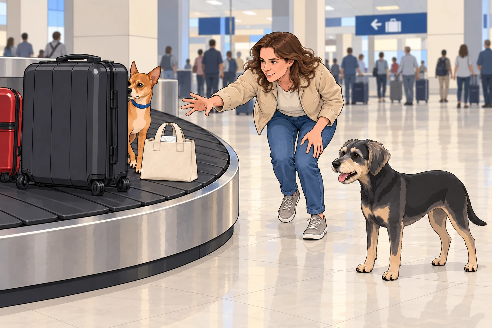
Chasing his first bag hadn’t made it easier to collect. The clear gap had. Neet was moving toward another gap now.
Buddy went ahead to it and barked.
Heather looked toward him. Neet rotated like a rotisserie chicken, trying to keep his face turned toward his audience while the belt carried the rest of him away.
“I CAN SEE EVERYTHING FROM HERE!”
“Then see her hand,” Buddy called.
Heather hurried to the gap and reached toward Neet.
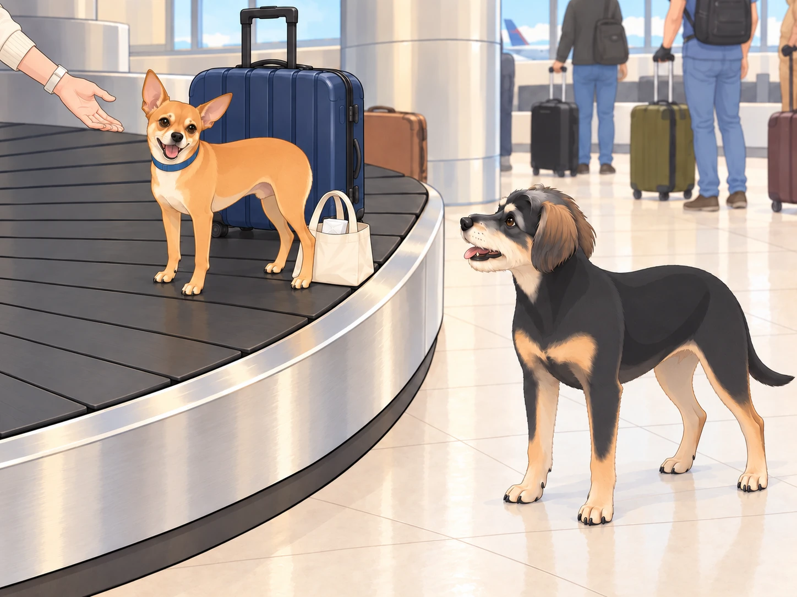
Buddy barked once more. He had found their missing item. Unfortunately, it had opinions.
A TSA officer with a beagle approached them, raising an eyebrow. “Ma’am, is that your dog?”
“I was hoping you wouldn’t ask,” Heather said, reaching for him.
“I WAS COMING BACK AROUND!”
“Come back here,” she said.
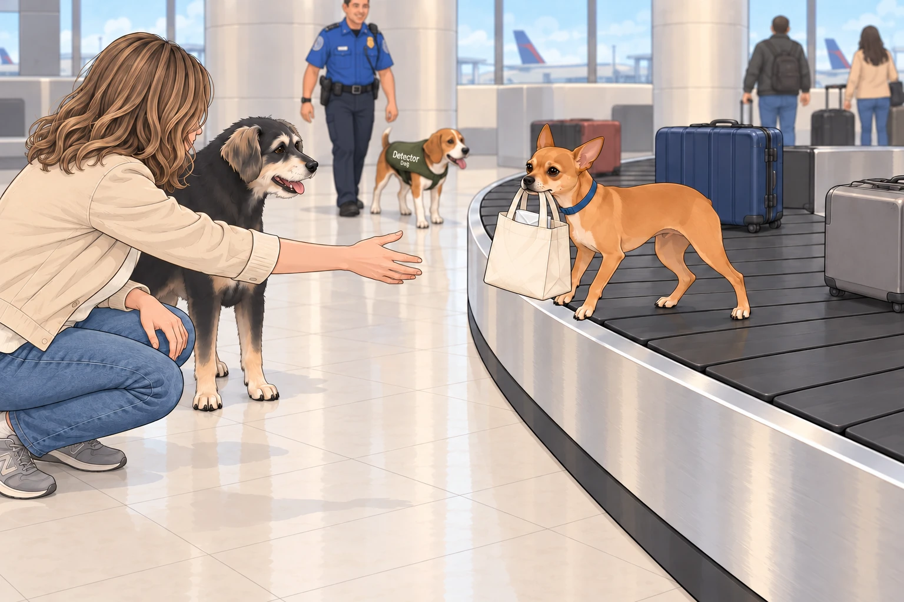
Neet crouched and finally jumped off the belt into the clear space. Heather caught his collar as his paws landed, keeping him beside her. The red suitcase continued without him.
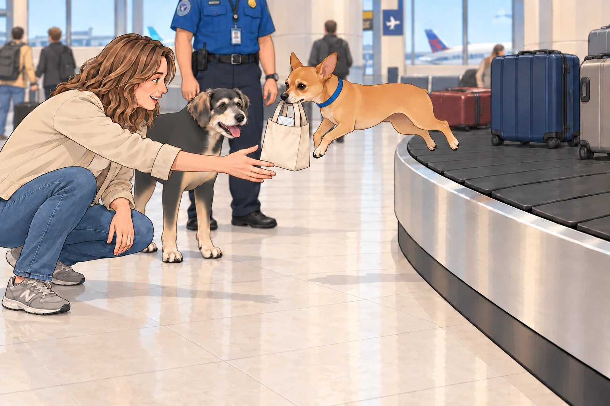
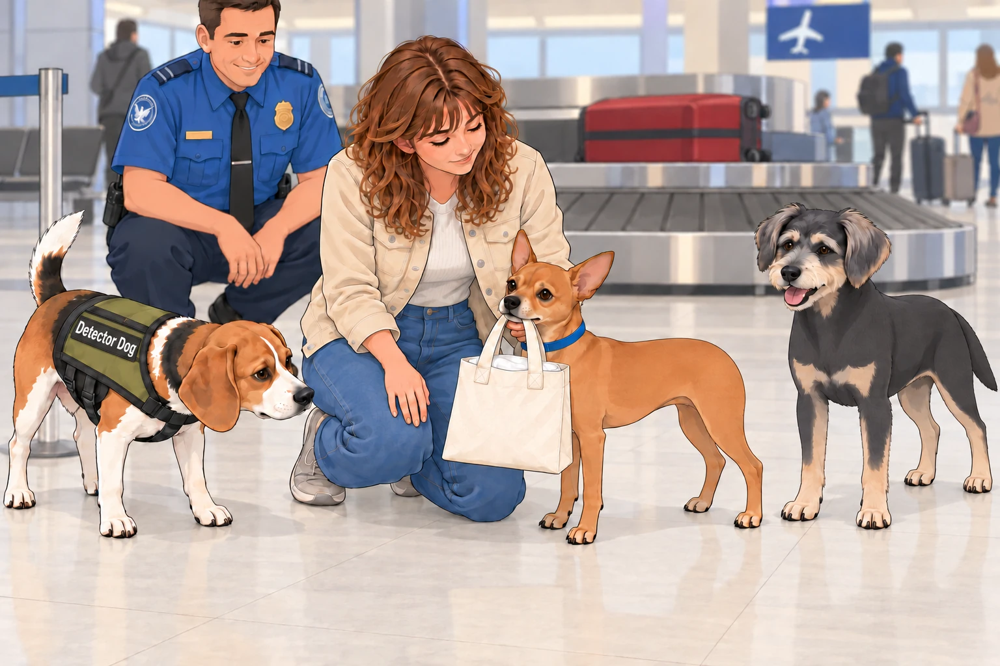
Buddy took a breath. One bag collected. The wrong kind, but definitely theirs.
The beagle, wearing a ‘Detector Dog’ vest, stared at Neet with suspicion.
“You smell… illegal,” the beagle said, narrowing his eyes.
Neet gulped. “Define illegal.”
The beagle sniffed his bag. “Do I detect… olives?”
Buddy gasped. “They found the stash!”
He took one careful step away from the bag, then stopped. What if leaving looked suspicious? The beagle kept sniffing. Buddy stayed exactly where he was.
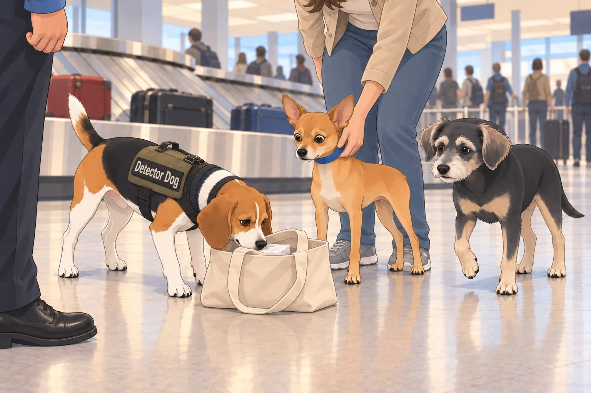
Neet put his nose in front of the bag opening.
The beagle moved around him. Neet moved his nose too.
“It’s a bag,” Neet said.
“Yes.”
“For personal things.”
The beagle sniffed again.
“These personal things are olives.”
Buddy closed his eyes. Neet had managed to carry them across an ocean, then advertised himself on a rotating platform.
Heather panicked. “I—wait, is that actually a crime?”
The beagle officer stepped forward dramatically. “Ma’am, you are aware that undeclared foreign produce is against regulations, correct?”
Neet, realizing the gravity of the situation, did the only logical thing.
He tugged the napkin out of the open bag with his teeth and spread it on the floor between his forepaws.
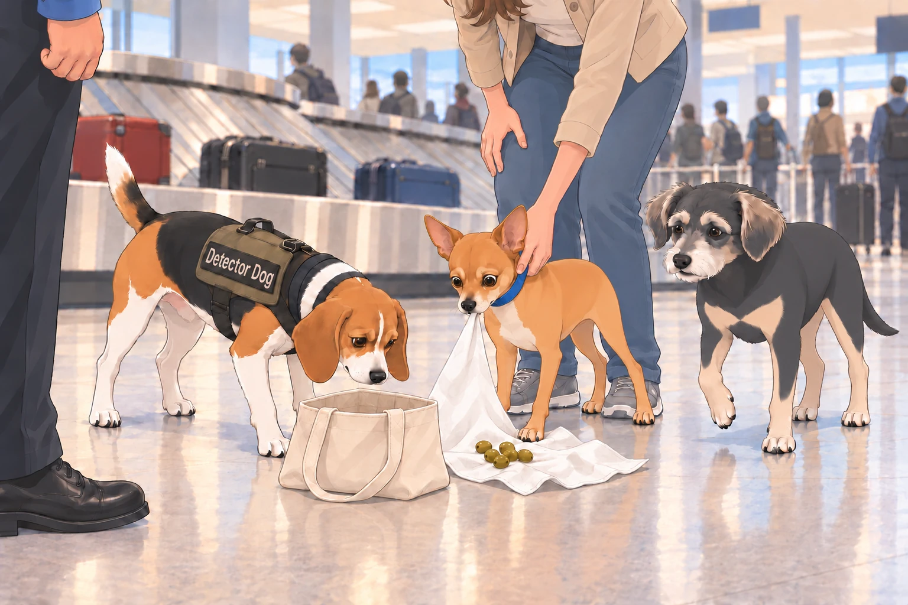
He ate the olives.
One by one. Whole.
Buddy watched each olive disappear. So did the beagle. For once, Neet had secured an attentive audience without barking.
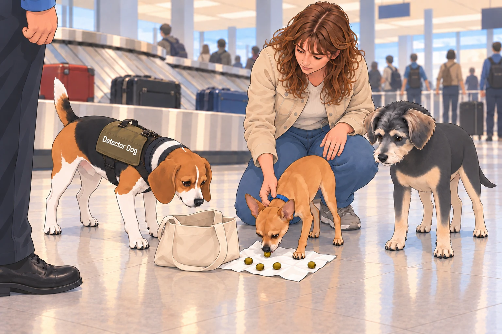
The last olive rolled toward the edge of the napkin. Neet pinned the corner with one paw, followed it with his nose, and ate that one too.
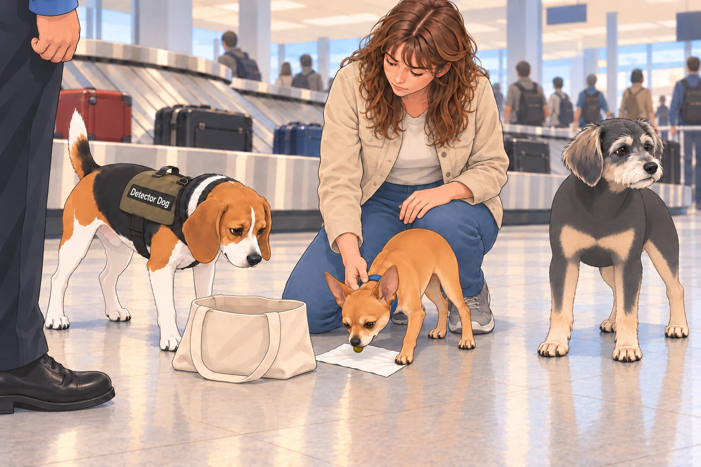
Buddy had spent the entire journey wanting the luggage to arrive. Now he wanted the luggage to stop arriving for approximately five seconds. Heather was watching Neet. Anything of theirs could pass behind her.
He turned toward the belt again.
The beagle officer’s jaw dropped. The TSA human sighed. “Well. That solves that.”
Heather kept one hand firmly on Neet’s collar and covered her eyes with the other. “You couldn’t have waited for breakfast?”
Neet licked his lips. “You can’t confiscate what no longer exists.”
The beagle looked at the empty napkin. It still smelled entirely of olives.
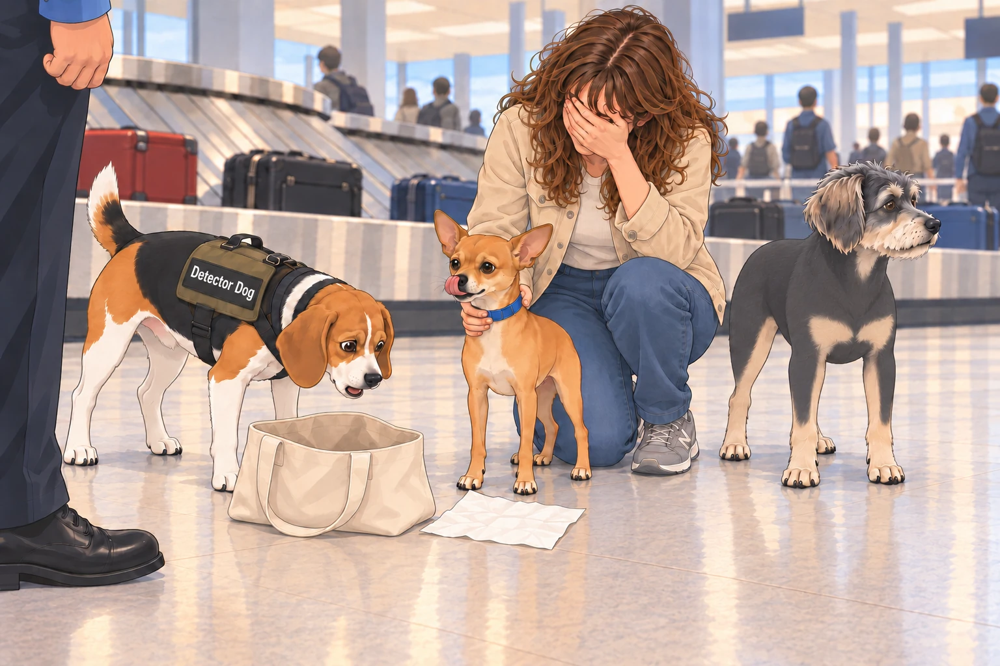
Buddy groaned. “Let’s just get our bags before we end up on a watchlist.”
This time he let a promising suitcase come around the curve before deciding. He leaned forward, looked at the other side, and barked for Heather.
She lowered the hand from her face and followed his gaze.
“Yes. That’s ours.”
Heather moved to the clear gap, brought Neet with her, and checked the tag before lifting the bag off. Buddy watched her set it down. An actual suitcase. He could have kissed it.
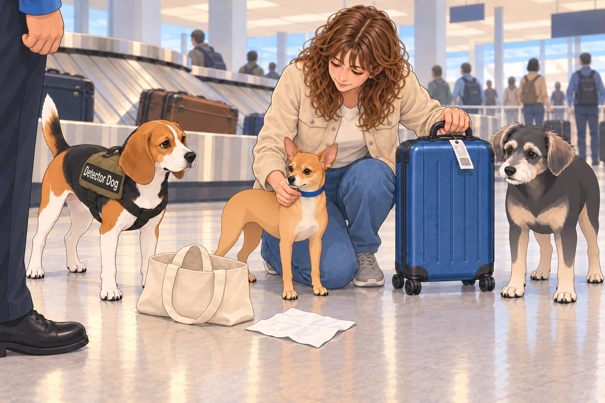
The next bag was theirs too. Buddy waited beside the first while she collected it, resisting the urge to escort the second around the belt. He had found a method that worked. It involved less running than his original method, which improved it considerably.
Heather gathered the used napkin into Neet’s little bag, closed it, and set it with the other bags. She looked from the luggage to both dogs and laughed, a small tired laugh that kept growing.
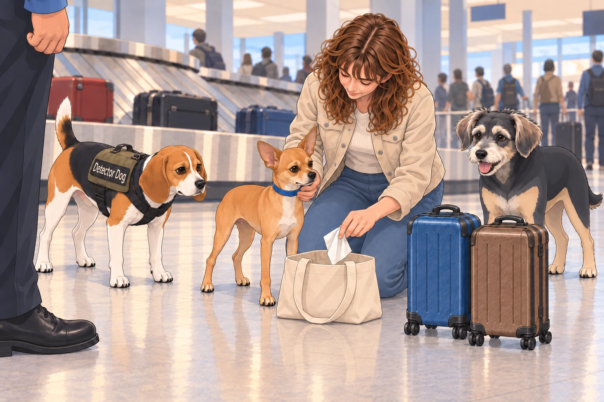
“Everybody accounted for. Even you.”
She rubbed Buddy’s head. He leaned into her hand before straightening to examine the route to the exit.
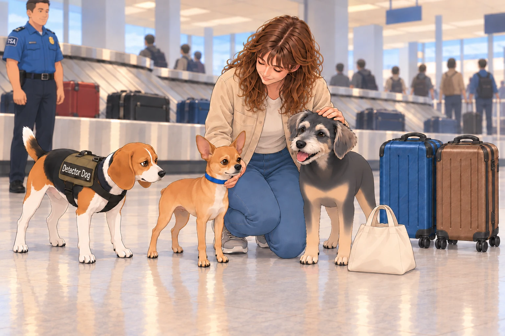
The beagle gave Neet one final glare.
“Empty,” Neet assured him.
Buddy waited until Heather had all the bags in hand, then headed for the door. When Neet glanced back at the carousel, Buddy quietly stepped into his path.
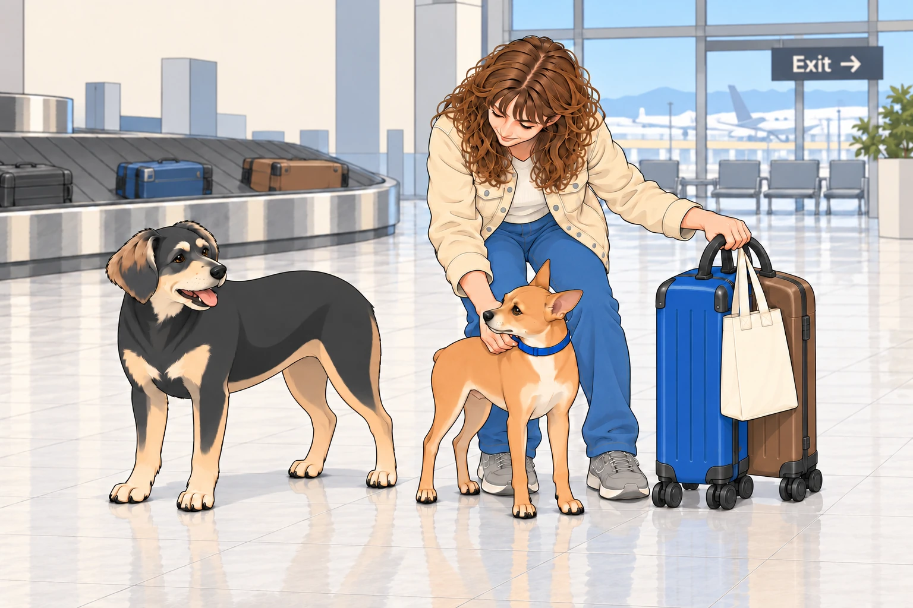
“You’ve been collected.”
Heather shortened her hold on Neet’s collar. He came along. Even luggage had to go home eventually.
Buddy walked beside her. His nap might still be a little farther away, but it was no longer making circuits without him.
“Welcome back to America,” Heather muttered. “We’re probably banned from two airports now.”
Neet, licking olive juice off his paws, grinned. “And yet, totally worth it.”
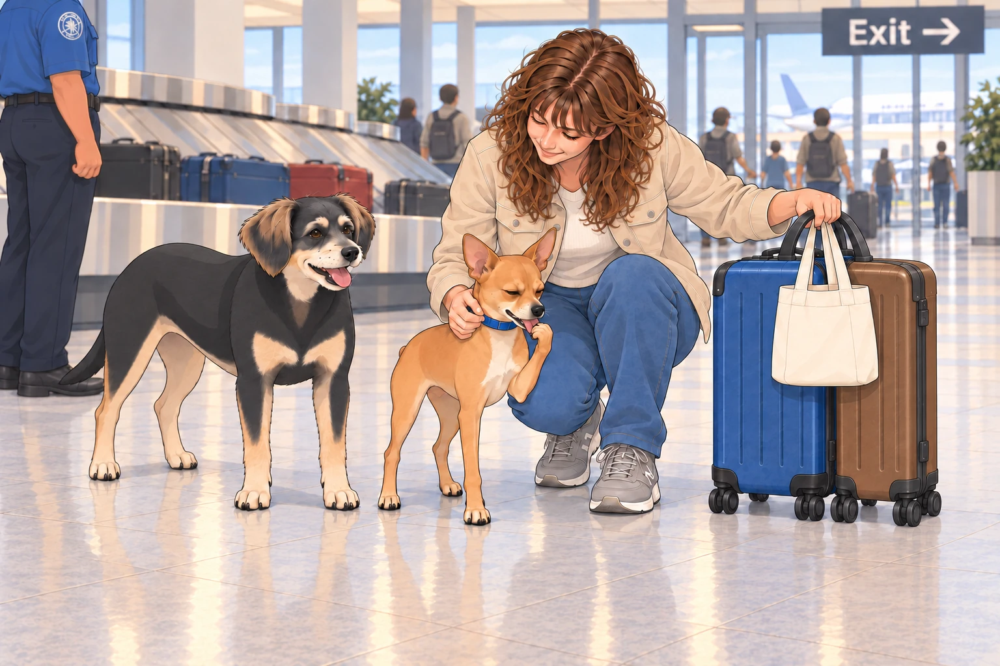